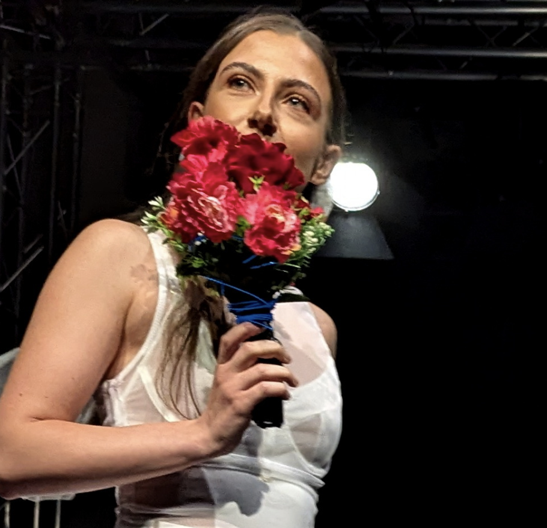
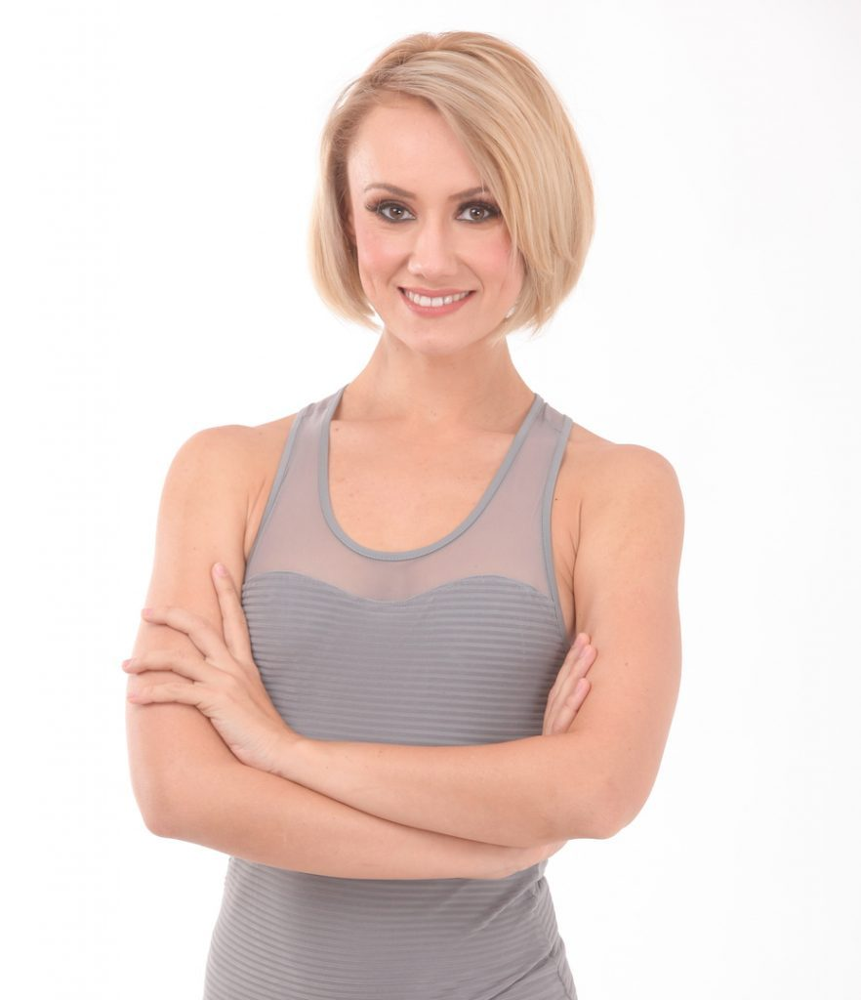
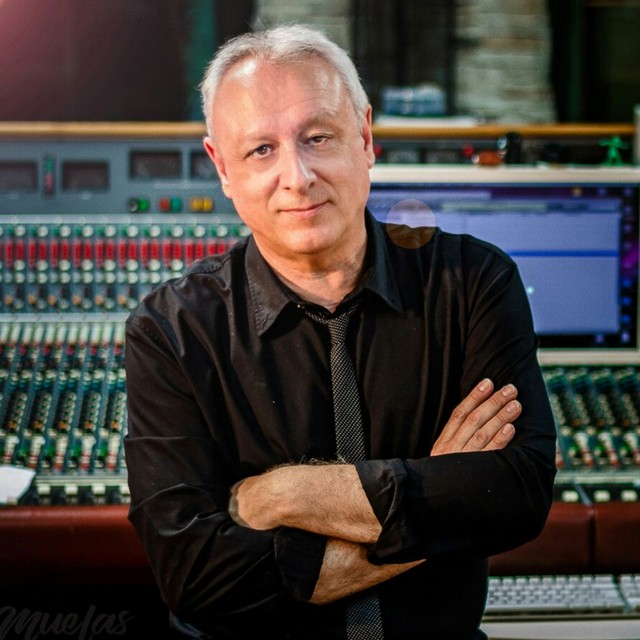
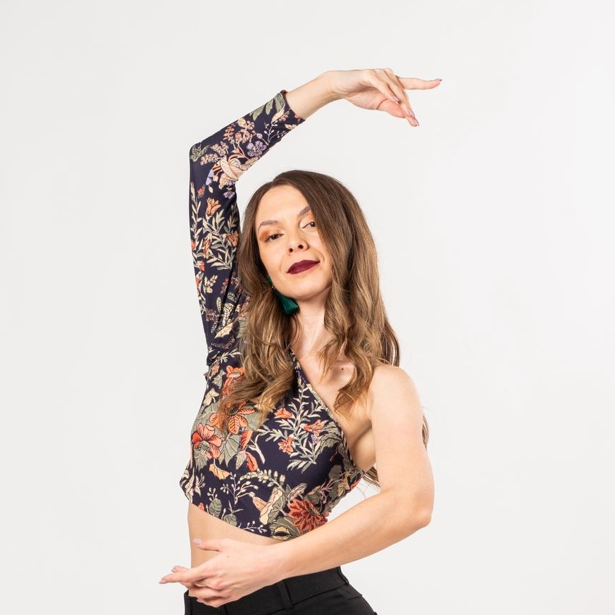

Andreea Ionescu este o profesoară de tango cu o experiență de peste 10 ani în dansuri de societate și tango argentinian.
A studiat în cadrul unor workshop-uri internaționale și a participat la numeroase spectacole și competiții de dans.
Este cunoscută pentru stilul ei elegant de predare, răbdarea cu începătorii și abilitatea de a transforma fiecare lecție într-o experiență relaxantă și plină de emoție.
Andreea pune accent pe conexiunea dintre parteneri, muzicalitate și expresivitate, ajutând cursanții să descopere adevărata esență a tangoului.

Maria Popescu este profesoară de balet cu o experiență de peste 12 ani în dans clasic și educație coregrafică.
A urmat studii de specialitate și a participat la numeroase spectacole și proiecte artistice, atât în țară cât și în străinătate.
Este apreciată pentru eleganța, disciplina și răbdarea cu care își ghidează cursanții.
Maria pune accent pe tehnica corectă, postura perfectă și dezvoltarea armoniei în mișcare,
ajutând fiecare elev să își descopere potențialul artistic într-un mediu calm și motivant.
Alexandru Stan este instructor de breakdance cu o experiență de peste 10 ani în dans urban și competiții de street dance.
A participat la battle-uri naționale și internaționale, unde și-a dezvoltat un stil puternic, dinamic și creativ.
Este cunoscut pentru energia lui, tehnica solidă și modul motivant în care lucrează cu elevii.
Alexandru îi ajută pe cursanți să își dezvolte forța, controlul corpului și propriul stil, într-un mediu antrenant și plin de energie pozitivă.

Radu Marinescu este instructor de vals cu o experiență de peste 15 ani în dansuri de societate și coregrafie de eveniment.
A participat la numeroase spectacole și competiții, unde a dezvoltat un stil elegant și rafinat.
Este apreciat pentru calmul, profesionalismul și atenția la detalii.
Radu îi ajută pe cursanți să învețe grația, postura corectă și fluiditatea mișcărilor, transformând fiecare lecție într-o experiență armonioasă și plăcută.

Elena Dumitrescu este profesoară de rumba cu o experiență de peste 10 ani în dansuri latino și dansuri de societate.
A participat la competiții și spectacole de dans, unde și-a perfecționat stilul expresiv și elegant.
Este apreciată pentru energia ei caldă, răbdarea și modul în care reușește să transmită emoție prin mișcare.
Elena îi ajută pe cursanți să își dezvolte muzicalitatea, conexiunea cu partenerul și expresivitatea, transformând fiecare lecție într-o experiență plină de pasiune și rafinament.